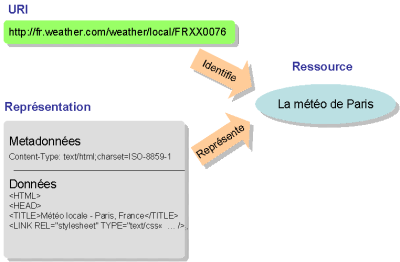

Introduction
Le W3C définit un Web service:
“
a software system designed to support interoperable machine-to-machine interaction over a network.
”
Le W3C distingue 2 types de web services:
- REST-compliant: manipulation de resources à travers un ensemble uniforme d'opérateurs ne nécessitant pas d'information d'état.
- Arbitrary: un ensemble quelconque d'opérations peut être proposé.
Les services web arbitrary, avec SOAP, sont présentés ici.
REST : principes
Representational State Transfer (REST) définit quelques principes simples pour concevoir
des systèmes distribués de type hyper-média (comme le world wide web).
Une architecture REST :
- est client/server: un client initie les requêtes vers les serveurs.
- les requêtes et réponses manipulent des représentations de ressources.
- un client change son état comme un automate à états fini.
Ses requêtes provoquent des transitions, et entre deux requêtes il est "at rest" :
peut interagir avec l'utilisateur mais n'utilise pas de bande passante et est déconnecté du serveur)
REST : principes
Pour qu'un système puisse être qualifié de RESTful, il faut les caractéristiques suivantes:
- Client/Server: les interfaces doivent être le seul point de communication (indépendance)
- Stateless : pas de contexte stocké sur le serveur entre les requêtes (la réponse est complète à chaque requête).
Le serveur peut au contraire maintenir un état, mais qui doit être accessible via une URL.
- Relais: un client ne doit pas savoir si il est connecté au serveur final directement ou passe par des intermédaires (load-balancing, shared caches)
- Cache : les réponses doivent être marquées par le serveur comme cachables ou non.
- Interface uniforme: les éléments échangés entre serveur et client ont les caractéristiques invariables suivantes (../..)
REST : principe Interface Uniforme
- Interface uniforme: les éléments échangés entre serveur et client respectent:
- Toutes les ressources identifiables de manière unique (URIs)
- Manipulation des ressources à travers leurs représentations
(e.g le serveur n'evoie pas une BD mais un document en représentant une partie,
l'utilisateur peut modifier ces élément, altérant la BD côté serveur)
- Messages auto-suffisants: contiennent toutes les informations pour leur traitement
(e.g le parser nécessaire )
- Transitions assurées par des hyperliens
Exemple de ressource
Soit un système d'interrogation météorologique, composée de
ressources. On peut désigner et obtenir une
représentation de chaque ressource.

figure empruntée à Jean-Paul Figer
Exemple de ressource
On peut décider que cliquer sur
http://fr.weather.com/weather/today-Paris-FRXX0076 signifie la demande d'une représentation de la resource.
On obtient
Date: Fri, 16 Jan 2009 22:16:10 GMT
Server: Apache
Content-Language: fr-FR
Keep-Alive: timeout=1, max=7482
Connection: Keep-Alive
Content-Type: text/html;charset=UTF-8
Cache-Control: private
Content-Encoding: gzip
Transfer-Encoding: chunked
200 OK
Les opérateurs
Les opérateurs sont les interfaces uniformes proposées par le serveur.
L'application d'un opérateur sur une resource peut être vue comme la transition
qui fait passer le système d'un état à un autre.
Dans de très nombreux cas, les opérateurs peuvent se limiter à CRUD.
Dans ce cas, l'implémenation avec HTTP peut être la suivante.
| HTTP Method | CRUD Action | Description |
| POST | CREATE | Création d'une nouvelle ressource |
| GET | RETRIEVE | Obtenir la représentation d'une resource |
| PUT | UPDATE | Modifie la ressource |
| DELETE | DELETE | Supprime la ressource |